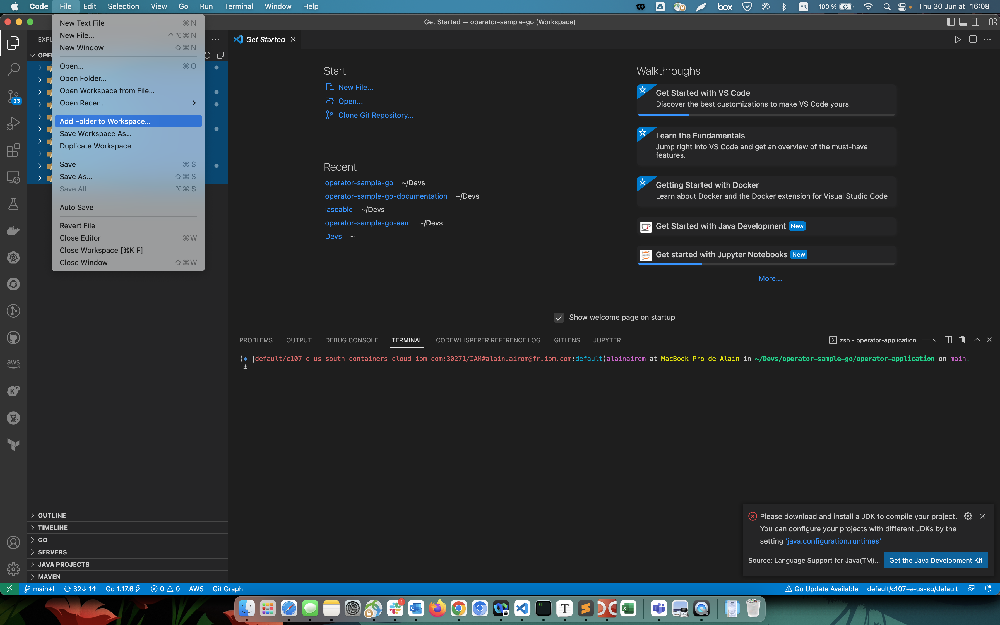

Setup Visual Studio Code Environment¶
Opening the root folder 'operator-sample-go' in VSCode will display import errors in the code.
This can be resolved by working directly in each operator subfolder, e.g:
cd operator-sample-go
code .
or
cd operator-database
make install run
This method has the advantage of working only with the relevant code, albeit you will need several VSCode windows open simultaneously. Tip: you can use the following keyboard shortcut (on Mac) to switch between VSCode windows:
Shift+cmd+`
Alternatively, if you prefer to access all folders in a single VSCode window, you can create a VSCode workspace and add each application subfloder to it.
-
First, open a new VSCode window. Select File->Add folder to workspace.
-
Add each subfolder one at a time, i.e. operator-application, operator-database etc
